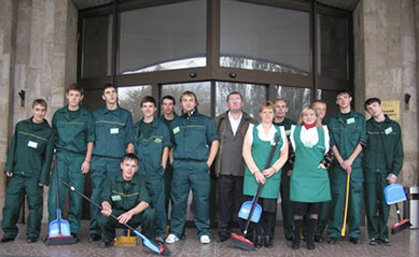

А все ли дома нормально? Эта мысль может отравить любое путешествие, придавая испанскому мохито и тайским кокосам какой-то тревожный привкус. Рассказываем, как сделать все возможное, чтобы свести риск к минимуму и не дать ворам обчистить вашу квартиру, пока вы загораете.
11 июля 2018
Как защитить дом от посторонних, пока вы в отпуске?

Обращайтесь к нам
Если Вам надо убрать квартиру, производственные или общественные помещения , выполнить химчистку ковровых покрытий, кожаных и меховых изделий , мягкой мебели , воспользоваться услугами прачечной. Если Вы хотите очистить фасад или вымыть окна в высотных зданиях — тоже обращайтесь, наши специалисты отлично владеют навыками промышленного альпинизма.
Наши клиенты
Среди наших клиентов предприятия производственной сферы и пищевой промышленности, фармацевтической и медицинской отрасли, учреждения бюджетной сферы и аптечной сети.
Список можно продолжать долго, но лучше всего Вы сможете убедиться в нашем профессионализме, обратившись к нам самостоятельно.

Наши клиенты
Среди наших клиентов предприятия производственной сферы и пищевой промышленности, фармацевтической и медицинской отрасли, учреждения бюджетной сферы и аптечной сети.
Список можно продолжать долго, но лучше всего Вы сможете убедиться в нашем профессионализме, обратившись к нам самостоятельно.

Среди наших клиентов предприятия производственной сферы и пищевой промышленности, фармацевтической и медицинской отрасли, учреждения бюджетной сферы и аптечной сети.
Список можно продолжать долго, но лучше всего Вы сможете убедиться в нашем профессионализме, обратившись к нам самостоятельно.
Последние
новости
-
{{ myMacros.blogtList(className="col-33 min", imgPath="images/img-10.jpg", title="Как защитить дом от посторонних пока вы в отпуске", data="11 июля 2018") }}
{{ myMacros.blogtList(className="col-33 min", imgPath="images/img-11.jpg", title="Как защитить дом от посторонних пока вы в отпуске", data="11 июля 2018") }}
{{ myMacros.blogtList(className="col-33 min", imgPath="images/img-12.jpg", title='Что нового в тарифе "Эконом"', data="11 июля 2018") }}